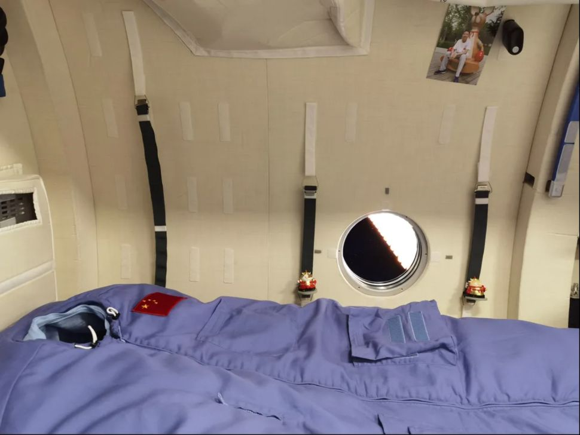
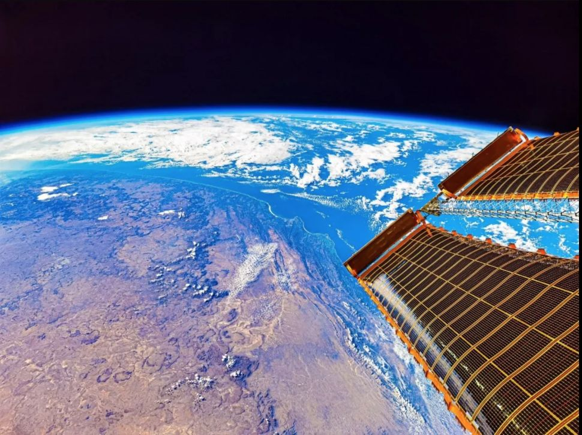
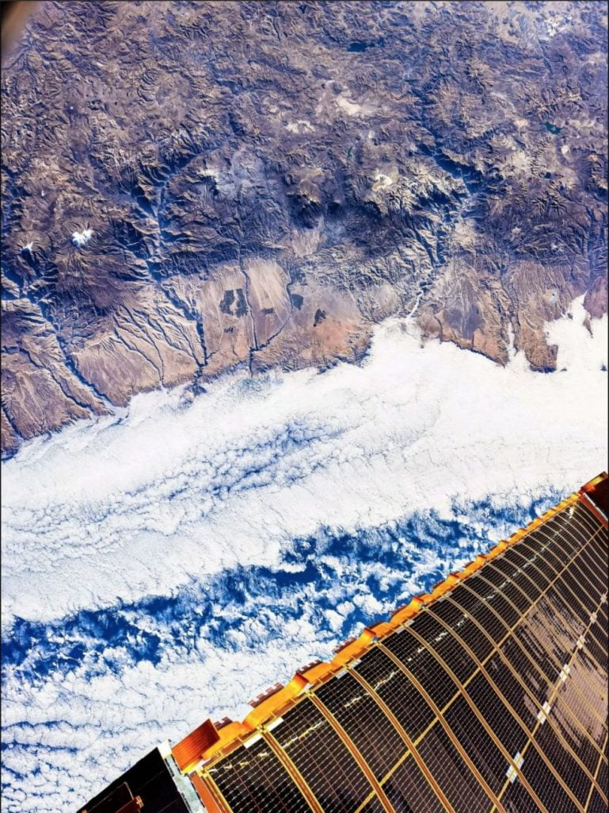

တရုတ်ပြည်သူ့ သမတနိုင်ငံရဲ့ အာကာသ စခန်းပေါ်ကို ပထမဆုံး ရောက်ရှိသွားတဲ့ အာကာသ ယာဉ်မှူးများက ရိုက်ကူးထားတဲ့ ဓါတ်ပုံများကို တရုတ်အာကာသ အေဂျင်စီက ထုတ်ပြန်လိုက်ပါတယ်။ ဒီအာကာသ ယာဉ်မှူး ၃ ဦးဟာ ဇွန်လ ၁၇ ရက်နေ့ကတဲက ဒီအာကာသ စခန်းပေါ်ကို ရောက်ရှိနေ ခဲ့တာ ဖြစ်ပါတယ်။ သူတို့ဟာ ဒီအာကာသ စခန်းရဲ့ ပြတင်းပေါက် ကျဉ်းကျဉ်းလေးကနေ မြင်ရတဲ့ ကမ္ဘာမြေနဲ့ ယာဉ်ပြင်ပ အာကာသရဲ့ လှပတဲ့ ဓါတ်ပုံတွေကို ကမ္ဘာမြေကို ပြန်ပို့ပေးခဲ့တာပါ။
ဇွန်လ ၁၇ ရက်နေ့ ရောက်ရှိတဲ့ အချိန်ကစလို့ အခုထိ ဒီအာကာသ ယာဉ်မှူးတွေဟာ ယာဉ်ပြင်ပထွက်ပြီး အာကာသထဲ လမ်းလျှောက်တာကို နှစ်ကြိမ် ဆောင်ရွက်ပြီး ဖြစ်ပါတယ်။ ဒါ့အပြင် သိပ္ပံဆိုင်ရာ စမ်းသပ်မှု များကိုလဲ စတင် ဆောင်ရွက်နေပြီ ဖြစ်ပါတယ်။ ဒါပေမယ့် သူတို့ရိုက်ကူးထားတဲ့ ဓါတ်ပုံတွေကိုတော့ အခုမှ ထုတ်ဖေါ်ပြသလိုက်ခြင်း ဖြစ်ပါတယ်။
အာဖရိကတိုက် မြောက်ပိုင်း ညမြင်ကွင်း (Image credit: Tang Hangbo/China Manned Space Engineering Office)ဒီ ပထမဆုံး ထုတ်ပြန်လိုက်တဲ့ ဓါတ်ပုံတွေထဲမှာ ပါတဲ့ ပုံတွေကတော့ မြောက်အာဖရိက ဒေသရဲ့ ညအချိန် မြင်ကွင်းဓါတ်ပုံ ပါဝင်သလို၊ ယာဉ်မှူး “တန်” ရဲ့ အိပ်ရာဓါတ်ပုံလဲ ပါဝင်ပါတယ်။ နောက်ပြီး ဘေဂျင်းမြို့ရဲ့ ညဖက်မြင်ကွင်း ဓါတ်ပုံနဲ့ ပစိဖိတ် သမုဒ္ဒရာ ပုံတို့လဲ ပါဝင်ပါတယ်။

အာကာသ ယာဉ်မှူးများ အိပ်ရာ (Image credit: Tang Hangbo/China Manned Space Engineering Office)နောက်တပုံမှာတော့ ကမ္ဘာမြေပြင် ခုံးခုံးကြီးရဲ့ အပေါ်နားလေးမှာ အလင်းရောင် တောက်နေတဲ့ အလွှာလေး ဖြစ်နေတာကို ရိုက်ထားတဲ့ ပုံလဲ ပါဝင်ပါတယ်။ ဒိလို ဖြစ်ရတာက နေရဲ့ အလင်းရောင်က လေထုထဲမှာ ရှိနေတဲ့ ဆိုဒီယမ် ဒြပ်မှုံ တွေကို ဖြတ်သွားလို့ ဖြစ်လာရတာပါ။ ဒီ ဆိုဒီယမ် အက်တမ်တွေဟာ ကမ္ဘာ့မျက်နှာပြင်က အမြင့်မိုင် ၅၀ နဲ့ ၆၅ မိုင် အကြားက လေထုထဲမှာ ရှိနေတာ ဖြစ်ပါတယ်။

တောင်အာဖရိက တိုက်ပေါ်မှာ ပျံသန်းနေစဉ် (Image credit: Tang Hangbo/China Manned Space Engineering Office)ဒီ ဓါတ်ပုံတွေကို ဘယ်ကင်မရာ အမျိုးအစားတွေနဲ့ ရိုက်ကူးထားသလဲ ဆိုတာတော့ မသိရပါဘူး။
ဒီအာကာသ ယာဉ်မှူးတွေဟာ ဒီလ စက်တင်ဘာ လလယ်ပိုင်းလောက်မှာ ကမ္ဘာကို ပြန်ဆင်းလာတော့မှာ ဖြစ်ပါတယ်။ ပြန်မလာမီ ကမ္ဘာ့မြေဆွဲအား ခံနိုင်အောင် လေ့ကျင့်ခန်းတွေ စတင်လုပ်ဆောင်နေပြီလို့ သိရပါတယ်။ နောက်ပြီး လက်ကျန် စမ်းသပ်မှု တချို့ကိုလဲ အပြီးသတ် ဆောင်ရွက်နေတယ်လို့ ဆိုပါတယ်။
ယခုယာဉ်မှူးတွေ လိုက်ပါလာတဲ့ ရှန်ဇု ၁၂ အာကာသယာဉ်ဟာ တရုတ်တို့ရဲ့ တီယန်ဂုန် အာကာသ စခန်း (Tiangong space station) တည်ဆောက်ရေးအတွက် လွှတ်တင်ဖို့ စီစဉ်ထားတဲ့ အာကာသယာဉ် ၁၁ စီးထဲက တတိယမြောက် အာကာသယာဉ် ဖြစ်ပါတယ်။ ဒီလကုန်မှာ တန်ဇု ၃ ကုန်တင်ယာဉ် (Tianzhou 3 cargo spacecraft) ကို လွှတ်တင်မှာ ဖြစ်ပြီး အောက်တိုဘာလမှာ လူ ၃ ယောက် လိုက်ပါမယ့် ရှန်ဇု ၁၃ အာကာသယာဉ်ကို လွှတ်တင်မှာ ဖြစ်ပါတယ်။

ပီရူးနိုင်ငံ ကမ်းခြေကို မြင်ရပုံ (Image credit: Tang Hangbo/China Manned Space Engineering Office)Reference:
China’s Shenzhou 12 astronauts send back stunning images of Earth | Space